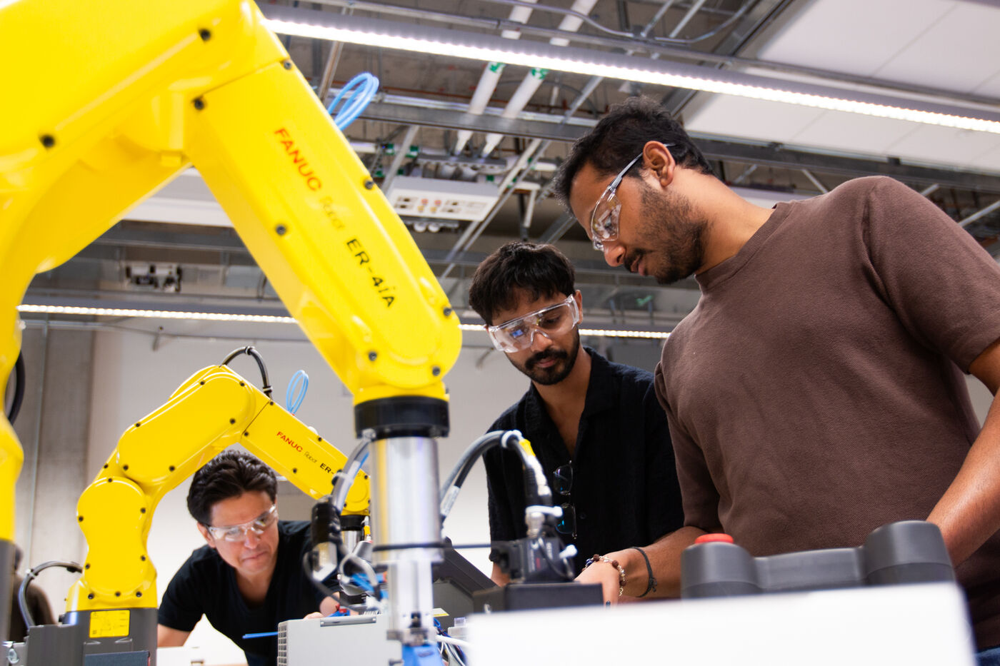
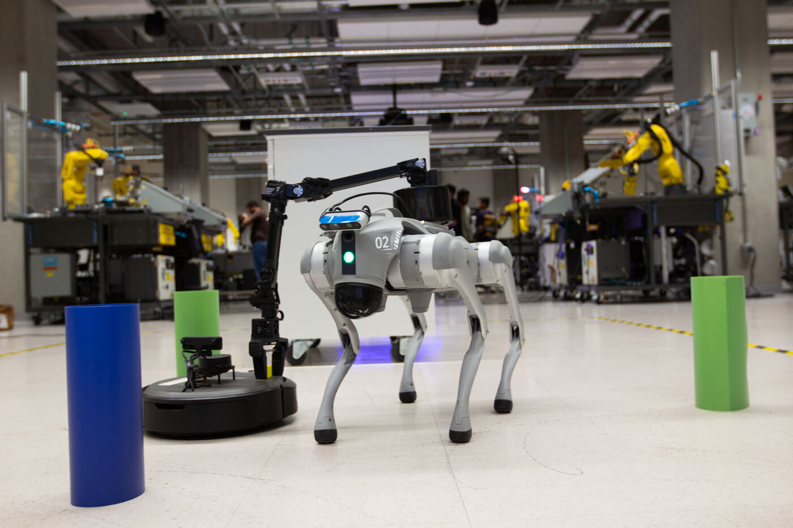
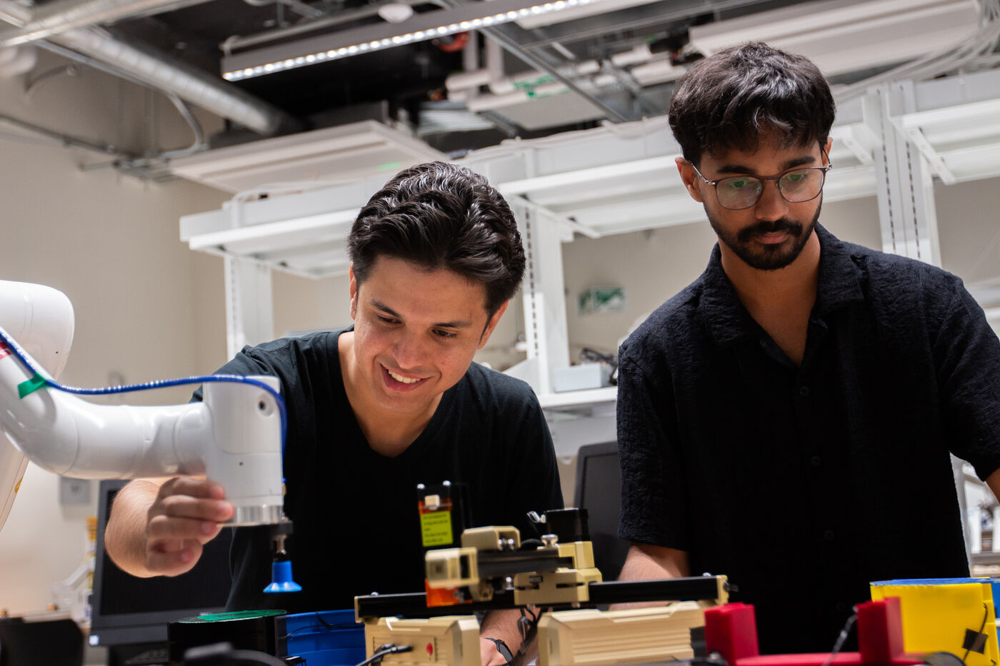
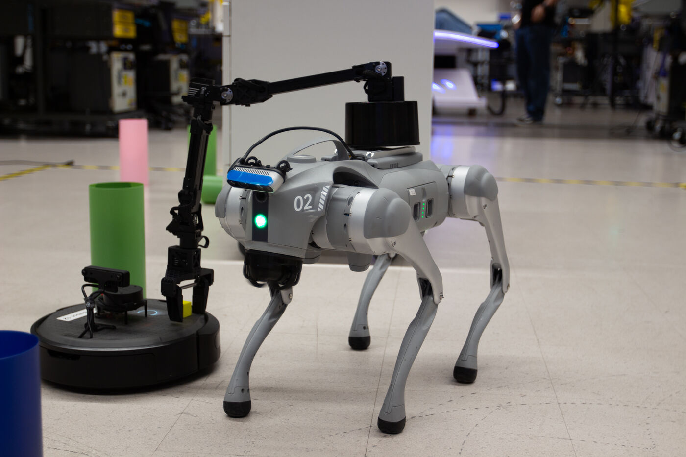
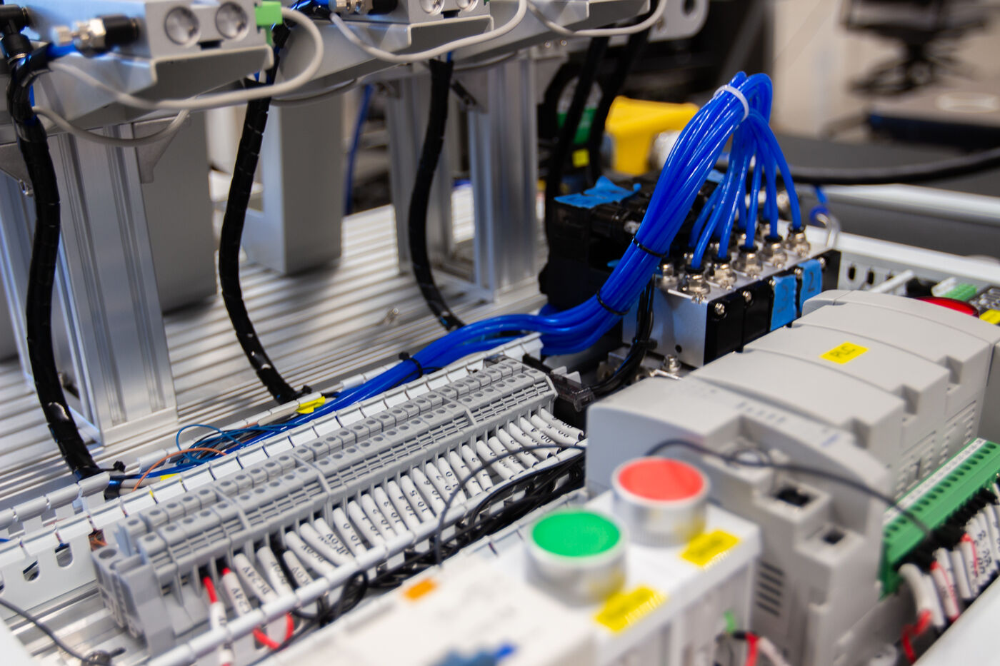
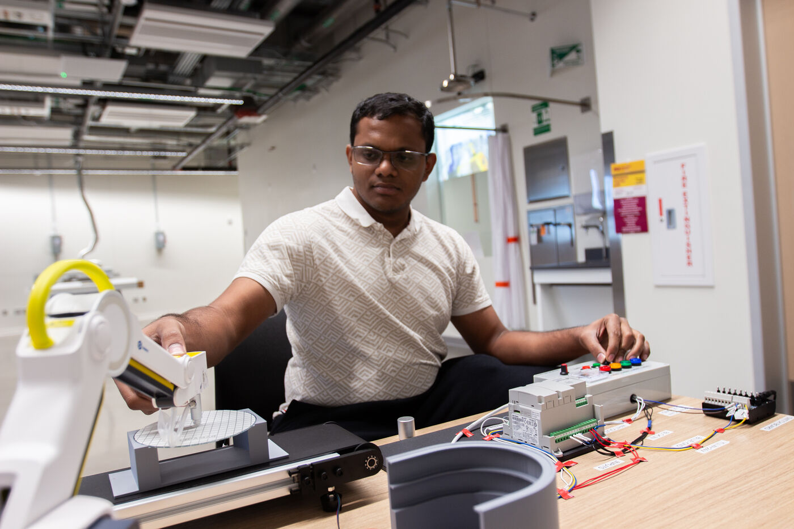
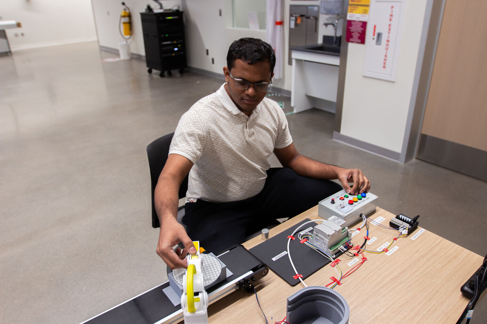
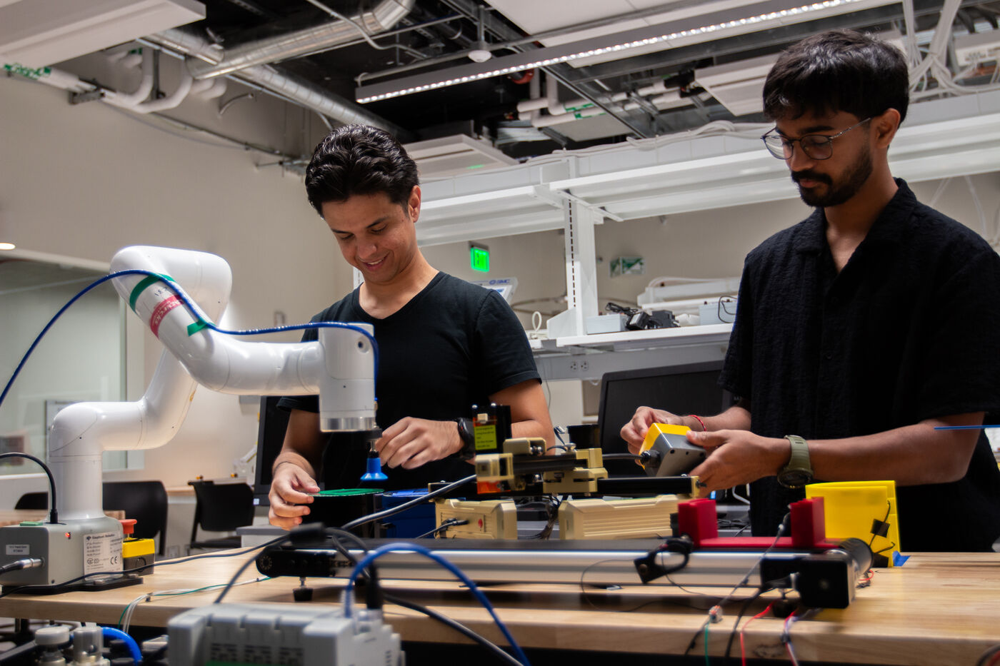

Project work in the lab.
Work from the lab's teaching team: simulation and digital-twin
projects, PLC and automation builds, and robot-arm
experiments. Each project belongs to the person named on the
card; the links go to their own portfolios, where the full
write-ups, videos, and documentation live.
Simulation and digital twins
Tatwik Meesala

Stellantis industrial Physical AI demonstrator
An industrial Physical AI workcell that combines collaborative-robot
execution, Wandelbots NOVA software-defined orchestration, and an
NVIDIA Isaac Sim digital twin. Lab assistant Prajval Arora
designed and built the demonstrator's table.
Tatwik's portfolio →
Prajval Arora

Unitree Go2 training in Isaac Sim
Reinforcement-learning training of a Unitree Go2 quadruped in
NVIDIA Isaac Sim - walking and flipping as target skills - using
ROS 2 and Omniverse digital-twin workflows.
Prajval's project page →
Prajval Arora

Petoi Bittle: sim-to-real control loop
A small quadruped robot with an Isaac Sim digital twin and a
camera-feedback loop, connecting commanded motion, simulated
motion, and observed motion in one system.
Prajval's project page →
Tatwik Meesala

SmartFollower: TurtleBot 4 target tracking
An autonomous TurtleBot 4 that follows an ArUco-tagged target,
predicts through short occlusions, and enforces LiDAR safety -
built on ROS 2 with an OAK-D camera and RPLidar.
Tatwik's portfolio →
PLC and automation
Prajval Arora and team

Truffle packaging line
A miniature factory - machine vision, conveyors, an Arduino Opta
PLC, and Dobot arms - that sorts 3D-printed truffles and boxes
them untouched. A seven-person RAS 102 course project shown at
the ASU Innovation Showcase in May 2026; Prajval built the
communication between the arms and the PLC.
Prajval's project page →
Prajval Arora

Dobot + Opta PLC control layer
A control layer that drives four Dobot Magician Lite arms from an
Arduino Opta PLC over raw GPIO handshakes - no educational
wrapper - so each stage of a line starts the next, like a real
factory.
Prajval's project page →
Prajval Arora

Tic-tac-toe on paper
A Dobot Magician Lite arm plays tic-tac-toe against a person with
real blocks on a paper grid, reading the board with computer
vision before each move.
Prajval's project page →
From project work to teaching material
Prajval Arora & Tatwik Meesala

Isaac Sim + ROS 2 TurtleBot lab guide
The pair's co-authored RAS 545 Robotic Systems I laboratory guide:
from a simulated TurtleBot to a ROS 2 robot - movement, sensors,
and a transform tree - with validation checkpoints at every
layer. Written for Prof. Sangram Redkar's course.
Prajval's project page →
The lab guides on this site ↓
Finals and lab exercises built by students in RAS 545 and RAS 546
(and ASU's equipment-technician program) on the lab's Dobot arms,
drones, and controllers. Each card names the student who built the
project and links to their own LinkedIn post - the lab is where the
work happened, not the author. RAS 545/546 instructor: Prof. Sangram
Redkar.
RAS 545 - student project
LLM-powered Dobot pick-and-place
A Dobot arm picks and places blocks from natural-language
instructions, combining a Groq Llama 3.3 language model, OpenCV
color detection, and camera-to-robot calibration. Built by
Saketh Chilkepally as an RAS 545 final project.
Original post on LinkedIn →
RAS 546 - student project
Parrot Mambo firmware and real-time deployment
Firmware configuration and Bluetooth communication for the
Parrot Mambo minidrone, deployed in real time. Built by Tirth
Rank for RAS 546 (Robotics Systems II).
Original post on LinkedIn →
RAS 546 - student project
Live drone telemetry and motor control
Real-time sensor data acquisition and motor control on the
Parrot Mambo minidrone. Built by Tirth Rank for RAS 546
(Robotics Systems II).
Original post on LinkedIn →
RAS 545 - student project
Dobot Magician Lite gripper pick-and-place
Automated pick and place of blocks using the gripper end
effector on the Dobot Magician Lite. Built by Sachin Varma
Alluri.
Original post on LinkedIn →
RAS 545 - student project
Natural-language pick-and-place
An LLM-powered system that lets a robot arm understand and
execute natural-language pick-and-place instructions. Built by
Yeshwanth Voragunti as an RAS 545 final project.
Original post on LinkedIn →
RAS 545 - student project
LLM-guided vision-based block manipulation
Vision-guided block manipulation driven by a large language
model. Built by Vamsi Sai Korlapati as an RAS 545 final
project.
Original post on LinkedIn →
RAS 545 - student project
Words to robot actions
Commands like "place the farthest blue block on the nearest red
one," executed by the robot arm through language-model
reasoning. Built by Amatya K.
Original post on LinkedIn →
RAS 545 - student project
Agentic AI embedded robot
An OpenAI-driven agentic system on the Dobot Magician Lite,
built by Chach Chaimongkol as an RAS 545 final project.
Original post on LinkedIn →
ASU/TSMC Equipment Technician program - team project
Wafer handling automation cell
A PLC, Dobot arm, and sensor handshake with a suction end
effector moves wafers from a conveyor to a cassette. Team
project (Phoenix Suns, Group 6) in the ASU/TSMC Foundations
for Equipment Technicians program; post by Jason Young.
Original post on LinkedIn →